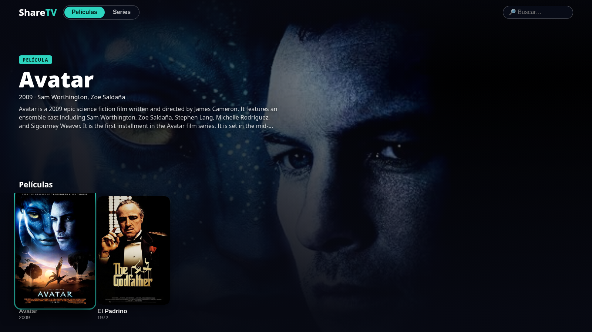
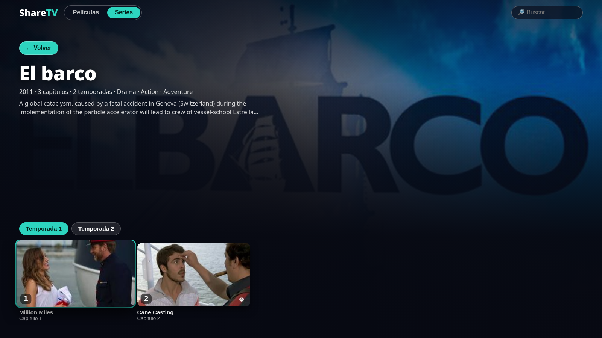
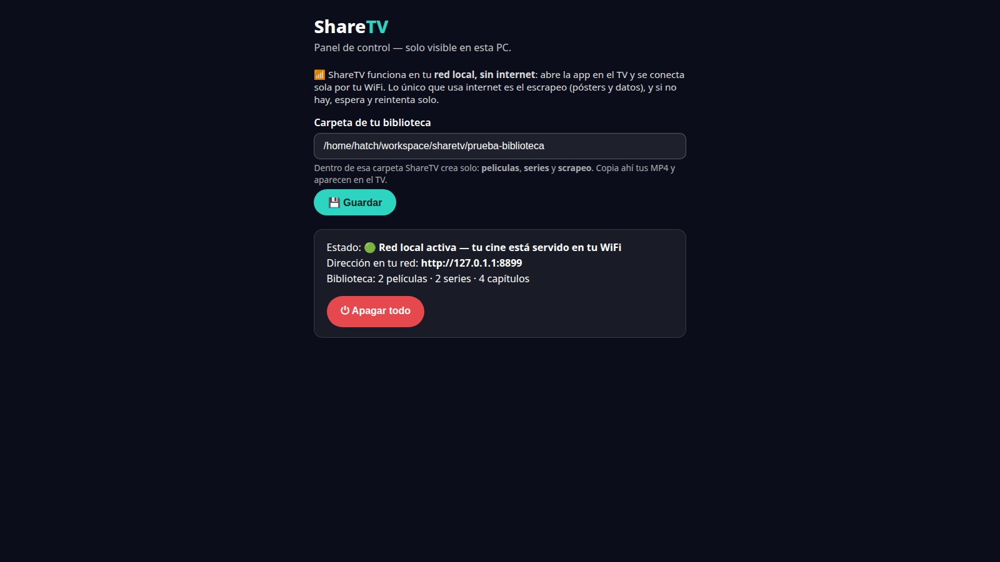

Tu cine en casa, sin internet: el servidor vive en tu PC, el cliente en tu TV, y se encuentran solos por tu red local.
Sin cuentas, sin nube, sin suscripciones. Tus películas y series no salen de tu casa.

Convierte la carpeta de vídeos de tu PC en un cine con cara de plataforma de streaming, pensado para verse en el TV y manejarse con el mando.
Funciona con la red de tu casa aunque no haya internet. Todo ocurre entre tu PC y tu TV.
La app descubre tu PC automáticamente —un faro en la red y, si hace falta, un escaneo—. Nada de escribir direcciones IP.
Busca solo los pósters, las sinopsis y las fotos y títulos reales de los capítulos (cuando hay internet) y los guarda para siempre.
Recuerda dónde ibas en cada película y capítulo, y te lo deja a un OK de distancia.
Una sola pantalla, filas horizontales y un reproductor sin botones que roben el foco. Lo intuitivo manda.
Sin cuentas ni registros: nadie fuera de tu red puede ver tu cine, y tu cine no llama a ningún sitio.
Tres pasos, una sola vez.
Elige la carpeta de tu cine una sola vez y listo: queda funcionando.
A las carpetas peliculas/ y series/ de tu cine. El servidor las ordena y les busca la cara solo.
Se conecta sola a tu PC. A ver cine.
La interfaz real, funcionando.


Viendo una película o un capítulo:
¿En el móvil? Lo mismo, pero con el dedo: desliza las filas, y viendo algo, toca la pantalla para correr el vídeo con la barra o saltar al siguiente capítulo. Atrás es el gesto de siempre.
Solo hay una regla: películas sueltas en peliculas/ y cada serie en su carpeta.
MiCine/
peliculas/
Avatar (2009).mp4
El Padrino (1972).mp4
series/
El barco/
temp 1/
El barco 1x01.mp4
El barco 1x02.mp4
Lo que casi todo el mundo se pregunta, y lo que puede salir mal.
No. ShareTV funciona solo con la red de tu casa: tu PC y tu TV en la misma WiFi. Internet solo lo usa el servidor, cuando lo hay, para buscar las portadas y los datos de tu biblioteca.
Ten ShareTV abierto en la PC y espera unos segundos: la app busca sola, sin escribir nada. Revisa que el TV y la PC estén en la misma red (no en la WiFi de invitados) y que Windows haya dado permiso a ShareTV en tu red privada. Si cambiaste de red, cierra la app y ábrela otra vez.
Ponle el año en el nombre del archivo (por ejemplo: Avatar (2009).mp4) y deja el servidor con internet un rato: la busca solo y la guarda para siempre. Si pones una imagen .jpg con el mismo nombre que el vídeo, se usa esa.
Archivos MP4: las películas sueltas en la carpeta peliculas/ y las series en series/, cada una en su carpeta y con sus temporadas en subcarpetas. El número de capítulo sale del nombre del archivo (1x03, S01E03…).
Casi siempre es la señal WiFi: acerca el TV al router o conecta la PC por cable a la red. Los archivos muy pesados también agradecen una red despejada.
Sí: la misma app sirve en el móvil, con controles táctiles. Todo el cine de tu casa, en el bolsillo.
No. Todo pasa entre tu PC y tu TV, dentro de tu red. Sin cuentas, sin nube, sin registros.